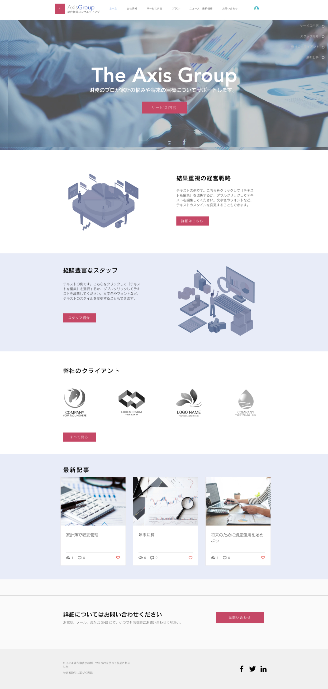

架空経営コンサル会社のWebサイト

制作期間
3週間
使用ツール
WIX
ターゲット
・財務管理や経営戦略のサポートを求めている中小企業の経営者管理職
・事業拡大や収益向上のためのアドバイスを必要としている個人事業主
・家計の見直しを考えている個人
・事業拡大や収益向上のためのアドバイスを必要としている個人事業主
・家計の見直しを考えている個人
目的
コンサル内容に興味をもったユーザーをセミナーの予約に誘導し、申し込みに繋げる
デザイン
経営の見直しや、家計の収支管理の効率化を検討しているユーザーが、どのようなサービスを受けられるのか、
必要な情報にすぐ辿り着けるかが重要であると考えました。
トップページに「サービス内容」を配置し、Axis
Groupの実績のグラフを配置したページへリンクするようにしたことで、データで実績をユーザーが把握し興味
を持ったのちに、サービス内容やスタッフの紹介などの詳細な情報を得られる各ページを閲覧ができる導線にし
ています。
会社情報、サービス内容等、主要なコンテンツへのアクセスが容易なメニュー構成にし、かつ、各コンテンツの
ページ下部には問い合わせフォームへリンクするボタンを設置しています。WEBサイトのページを閲覧する中
で、ユーザーを自然に問い合わせボタンへ誘導することで、生じた疑問点を解消しやすい構造になるよう配置し
ました。
問い合わせ方法については、ユーザーの利便性を考慮して電話、メール、チャットでの問い合わせが可
能な設計としています。
必要な情報にすぐ辿り着けるかが重要であると考えました。
トップページに「サービス内容」を配置し、Axis
Groupの実績のグラフを配置したページへリンクするようにしたことで、データで実績をユーザーが把握し興味
を持ったのちに、サービス内容やスタッフの紹介などの詳細な情報を得られる各ページを閲覧ができる導線にし
ています。
会社情報、サービス内容等、主要なコンテンツへのアクセスが容易なメニュー構成にし、かつ、各コンテンツの
ページ下部には問い合わせフォームへリンクするボタンを設置しています。WEBサイトのページを閲覧する中
で、ユーザーを自然に問い合わせボタンへ誘導することで、生じた疑問点を解消しやすい構造になるよう配置し
ました。
問い合わせ方法については、ユーザーの利便性を考慮して電話、メール、チャットでの問い合わせが可
能な設計としています。

.jpeg)